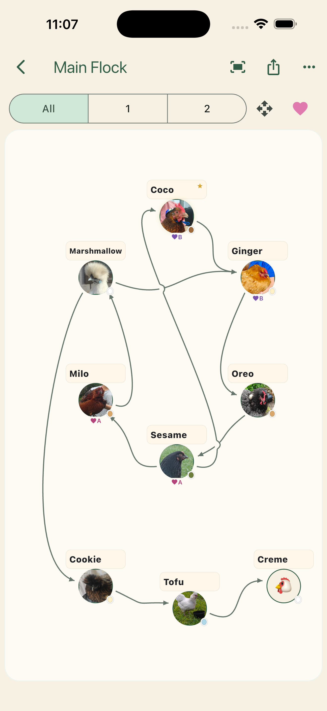

Backyard keepers & families
Add a name or ring code, record a friendship, and collect today’s eggs. Local records work without an account.
Meet your first flock →A better way to know your flock
Remember each bird, see who gets along, and keep eggs and breeding records together. Start with your backyard flock; open the deeper breeder tools when you need them.
Free Hobby plan: 6 chicken + 4 duck records · No account needed for local phone use

A start that fits your flock
Add a name or ring code, record a friendship, and collect today’s eggs. Local records work without an account.
Meet your first flock →Keep identities, pedigrees and hatch results together. Preview the guided project journey and compare one-time tools with Plus.
Follow a breeder example →Introduce the app with a short demonstration or print a handout. If your organiser supplied a code, follow the event-preview instructions.
Open the club kit →Made for real poultry keeping
From a backyard group to a larger breeding flock, keep the information you need close at hand.
Record observed dominance, explore a bird’s direct relationships and see loops without forcing your flock into a misleading numbered list.
Log daily collection, look back through your history and spot trends in an easy-to-read chart. Set an optional collection reminder.
Connect birds, breeding records and chick batches. Keep pedigree and hatch details together as your flock grows.
Use local phone records without an account. Plus adds private cloud backup and web access, with all breeder tools included while subscribed.
Start simple, go deeper when you need to
Record a collection on your phone. Watch the trend, follow a hatch and keep your breeding observations together. On the web, a dashboard brings eggs, projects and the next care checks into view.
Core flock and egg records are free within the Hobby allowance, including egg-history CSV export. One-time breeder packages add capacity and tools; Plus includes all breeder tools, cloud, web access and Breeding Projects while subscribed.
See mobile and desktop screen previews →Egg-screen examples use fictional records. Phone rollout varies by store; the manual covers version 0.20.1 and the current web app.


Choose your next step
Version 0.20.1 brings Today, guided hatch care, bird codes and clearer ways to grow your flock records. The current web app includes the dashboard and Breeding Projects. Phone rollout varies by store; check the available version before choosing a plan. Breeding Projects remains in development.
One-time purchase. The breeder tools for individual birds: unlimited records, extra photos, deeper pedigrees and exports, plus a choice of three- or six-month deworming reminders.
One-time purchase. Everything in Home Breeder, with pen and breed headcounts, flock movements and custom reminder intervals per pen. Keep using individual bird profiles alongside your pens.
Existing purchasers of the original full Breeder Unlock receive Full Breeder features at no extra charge. Home Breeder owners can choose the upgrade to Full Breeder.
The optional subscription includes all breeder tools, Breeding Projects, cloud backup and web access while subscribed. No separate breeder purchase is needed. Your one-time purchases remain yours if the subscription ends.
The store shows your current local price and purchase terms before you buy. All retained full bird records count towards plan allowances, including deceased, sold, rehomed and missing birds.
Your flock, with a little more room
Manage birds, eggs, flocks, family trees and breeding records on Mac, PC or tablet. Sign in with the same email as the phone app. Pecking Order Plus includes cloud, web access and all breeder tools while active. A one-time breeder purchase alone does not include cloud access. Eligible event previews can link web access for their remaining original trial period.
In supported versions, once you link your phone records, recorded changes and photos sync automatically while connected. History & sync keeps the latest 50 saved record versions so you can go back after a mistake.
Sign in to the web app →Record it on your phone. Pick it up on your computer.
Automatic sync · Record history · Recovery backupsUse the latest supported phone build. Changes waiting to upload stay on that device and sync when you open the app again. Public store versions may not yet include these features.
Local phone records work without an account. Egg-history CSV export is free. Plus already includes the breeder tools.
Plans, backups and web access: your questions answered →Ready to get to know your flock?